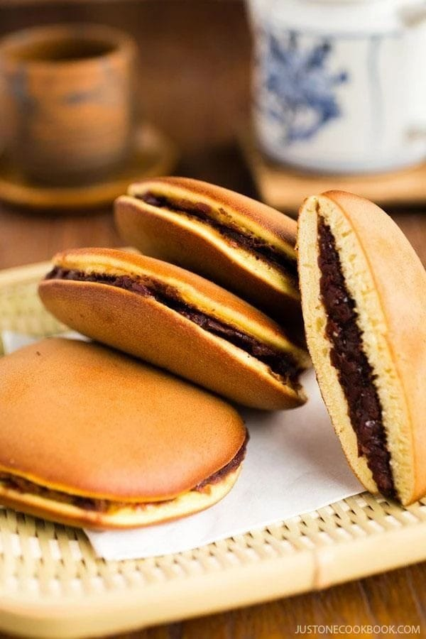

Ai pofta de ceva diferit (dar foarte bun) azi? Ce spui de mancarea japoneza? Si nu, nu ne gandim doar la sushi si noodles.
Renumita pentru preparatele bazate pe orez, soia, legume, peste si fructe de mare, bucataria japoneza este una dintre cele mai delicioase si sanatoase din lume. De fapt, este atat de deosebita, incat a fost inclusa pe lista patrimoniilor culturale intangibile UNESCO.
Daca acestea nu sunt motive suficiente cat sa te convinga sa-ti largesti orizonturile, ti-am pregatit impreuna cu restaurantul Sushi Terra, o lista cu cele mai bune mancaruri traditionale japoneze, pe care trebuie sa le incerci macar odata!
SUSHI

Pe departe cel mai cunoscut preparat, sushi nu poate lipsi de pe lista mancarurilor japoneze traditionale (numite si Washoku). Nu este tocmai usor de facut – iti trebuie putina indemanare si practica – insa este un element atat de apreciat si unic al culturii japoneze, incat bucatarii niponi studiaza ani intregi cum sa pregateasca sushi-ul perfect.
Pentru japonezi, sushi se refera la orice preparat care contine orez de sushi condimentat cu sos dulce. Orezul este pregatit in apa cu sare, zahar si otet de orez pentru a-i da o aroma bogata si intensa.
In functie de tipul de sushi, acesta poate avea diferite umpluturi sau toppinguri care, traditional, contin peste sau fructe de mare crude. Dar si vegetarienii pot savura sushi in stil japonez, rulourile fiind umplute cu legume proaspete.
SASHIMI

Sashimi se refera la felii subtiri de peste sau fructe de mare crude sau marinate. La fel ca si in cazul sushi, exista mai multe tipuri de sashimi, printre care Sake (somon), Toro (felii de ton), Ebi (creveti), Saba (macrou), Ika (calmar) si Tako (caracatita). Spre deosebire de sushi, acesta nu se serveste cu orez, ci insotit mereu de sos de soia, ghimbir sau wasabi.
Pestele crud este un gust mai aparte, mai ales daca nu vine insotit de o garnitura cum este orezul din sushi.
MISO SOUP

Supa miso este o alta reteta japoneza cunoscuta pentru gustul deosebit, dar si beneficiile pentru sanatate. Este esentiala in bucataria nipona, fiind parte din orice masa traditionala. Ca sa nu mai spunem ca japonezii consuma zilnic supa miso.
Preparatul este facut din zeama de peste sau alge kelp combinata cu pasta miso. Miso este, in esenta, pasta de soia fermentata. Cu cat procesul de fermentatie este mai lung, cu atat supa are o culoare mai inchisa si un gust acrisor si puternic. Altfel, supa va fi mai deschisa la culoare, mai dulceaga si mai usoara. Supa miso contine de asemenea tofu si ceapa verde, alaturi de alte ingrediente precum pestele, fructele de mare sau carnea de porc, in functie de tipul ales.
Aceasta supa este perfecta pentru pranz. Hranitoare si gustoasa, este mai mult decat suficient cat sa te tina energizat pana cand te intorci seara acasa.
SOBA

Soba este o mancare japoneza care are la baza taitei uscati subtiri aproximativ ca spaghetele. Daca te numeri printre cei care evita sau au intoleranta la gluten, poti sta linistit pentru ca soba sunt facuti din faina de hrisca, deci 100% gluten-free! Mai mult, acestia contin toti cei opt aminoacizi esentiali si toate beneficiile nutritionale ale graului si ale orezului (dar fara gluten!). Putem spune ca taiteii soba sunt fara indoiala un deliciu culinar pentru health nut-ul din tine.
Soba au o culoare maronie mai inchisa si se servesc calzi in supa fierbinte asemenea ramen-ului, peste care se adauga topping-uri cum ar fi feliile de ceapa si pudra de chilli.
Taiteii soba pot serviti si reci fara supa, dar cu diverse sosuri sau toppinguri, inveliti in foi nori sau chiar ca salata. Pe departe cel mai cunoscut este yakisoba, o reteta preparata in tigaia wok. Pe langa taitei, aceasta contine si felii de carne, felii subtiri de legume cum ar fi varza, morcov, ceapa, bambus sau muguri de fasole si, desigur, condimente, cel mai folosit fiind un sos similar celui de stridii.
Cu alte cuvinte, orice fel de mancare cu taitei soba, are tot ce-ti trebuie ca sa mananci pe saturate
TEMPURA

Tempura este orice leguma, peste, fructe de mare sau carne invelita in aluat si prajita in ulei. Un fel de snitel. Printre cele mai populare umpluturi se numara crevetii, vinetele, ardeiul, fasolea verde, ciupercile, cartofii, radacina de lotus si bambusul, dar nu numai.
Se acorda mare atentie prepararii acestei mancaruri in sensul in care aluatul trebuie sa fie foarte rece, iar uleiul foarte fierbinte pentru ca tempura sa iasa subtire, crispy si gustoasa. Stii cum japonezilor le place sa manance cu zgomot – este semn ca mancarea este pe gustul si sufletul tau si un semn de apreciere fata de bucatar. De aceea urmaresc ca si mancarurile prajite sa fie foarte crocante – pentru a scoate sunet, chiar daca nu la fel de zgomotos ca taiteii.
In general, tempura este servita cu sos de soia, ca garnitura sau topping la orez sau noodles. Dar si simpla poate fi vedeta unei mase delicioase.
YAKITORI

Yakitori sunt frigarui de pui pe gratar, servite de regula cu orez si un sos la alegere. Japonezii folosesc toate partile unui pui, de la copanele si aripioare, la ficat, inima, sau creasta, pentru a evita risipa, un element foarte important in cultura japoneza. Acum vei gasi si frigarui cu creveti, somon sau doar legume.
De ce frigarui japoneze si nu ale noastre, romanesti? Pentru ca nimic nu se compara cu felul in care japonezii pregatesc carnea pe gratar, iar yakitori este este cea mai reprezentativa mancare japoneza la gratar si este chiar una dintre cele mai buna mancaruri asiatice.
Yakitori nu este marinat, asa cum se intampla cu majoritatea retetelor la gratar. Ci se asezoneaza cu un sos in diferite momente pe durata coacerii. Poti opta doar pentru sare sau pentru tare, un sos facut din soia, vin de orez si zahar. Astfel, la final, vei avea pe farfurie niste frigarui care sunt si dulci si sarate, fragede si absolut incredibile. Pofta buna!
MOCHI

Japonezii nu sunt mari consumatori de dulciuri. Ca dovada, zaharul a ajuns in Tara Soarelui Rasare in secolul al XVI-lea si abia in secolul al XIX-lea a inceput sa fie cu adevarat accesibil. Nu inseamna ca nu vei gasi deserturi in Japonia, doar ca mai putine. Insa la fel de bune ca toate mancarurile lor traditionale.
Dintre toate, merita sa trecem in revista mochi, unul dintre cele mai cunoscute dulciuri japoneze traditionale.
Mochi este o prajitura din facuta din pasta de orez (un orez special, care este foarte lipicios). O poti consuma cruda sau coapta, simpla, imuiata in sos sau indulcita cu diverse toppinguri cum ar fi kinako (faina de soia prajita care are un gust foarte dulce).
De fapt, mochi este un ingredient de baza in prepararea altor mancaruri si deserturi japoneze. Spre exemplu, daifuku este mochi umplut cu pasta de fasole rosie sau alba, iar ichigo daifuku este daifuku care contine o capsuna intreaga la mijloc.
Daca esti adeptul unui stil de viata sanatos si iti este pofta de un dulce pe masura, poate incerci un mochi. Bogat in proteine, fibre si minerale, mochi este un deliciu foarte nutritiv si satios, apreciat pana si de catre Samurai.
DORAYAKI

Clatitele japoneze dorayaki seamana mai degraba cu american pancakes decat cu clatitele traditionale. Imi cer scuze de la inceput pentru calitatea pozelor dar aveam bateriile descarcate si m-am grabit sa fac totusi cateva poze. Rapide, fara fir de grasime si cu un gust delicios, clatitele japoneze dorayaki sunt ideale pentru micul dejun.